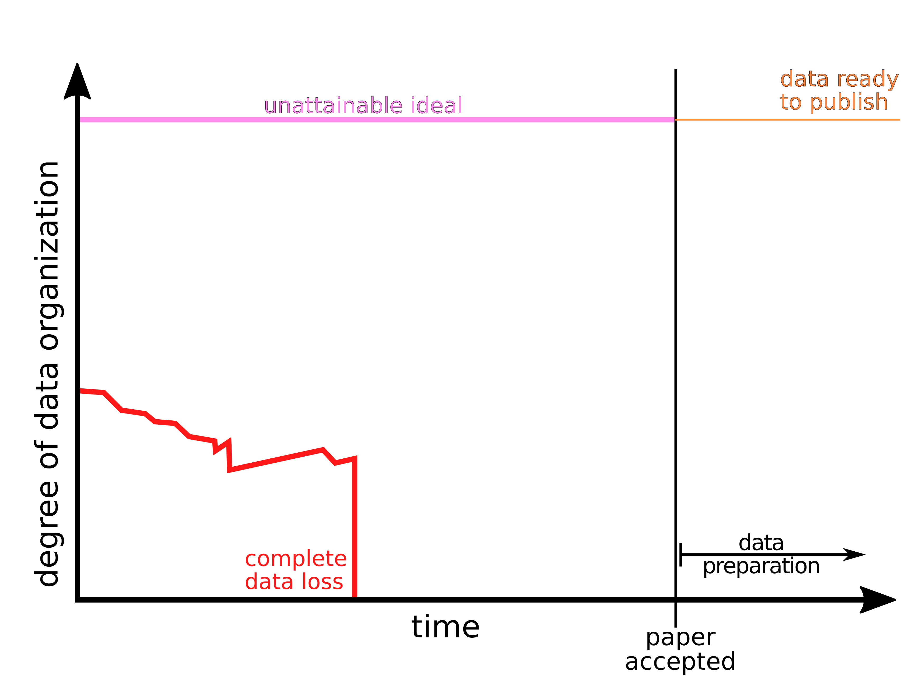
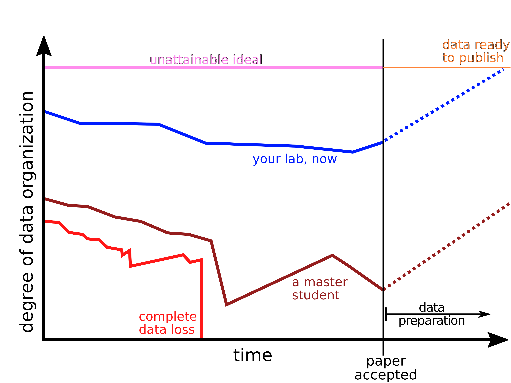

Eawag info event:
The SNSF Data Management Plan
— an overview —

Overview
- The facts:
Summary information from SNSF - Digression:
Why do they want me to do that, and what is in for me? - The Eawag
DMP Guide:
Introduction and instructions (live demo -- no slides)
The facts
Summary information from the SNSF
Disclaimer
- Information has been gathered from the SNSF website, various other info-events, and discussions with knowledgeable people.
- The only authoritative information are SNSF quotes, marked thusly:
"data collected with the aid of an SNSF grant must be made available to other researchers and integrated into recognized scientific data pools"
Obligations DMP
Obligatory for all new applications in the "project" funding scheme
"The DMP is an integral part of the grant proposal. The proposal can only be submitted once the DMP has been completed."
"Its content is assessed by the SNSF ... for its plausibility and adherence to the SNSF policy on open research data."
"Submission of a plausible DMP is a requirement for any transfer of funding."
"... researchers will be prompted to update their DMP at the end of the grant. ... The SNSF ... retain[s] the right to request additional information and/or amendments ..."
"The final version of the DMP will be made available on the SNSF's P3 database."
Obligations
DMP
Submission
only through mySNF web-form

Related
Obligations
Open Data Publishing
"The SNSF therefore expects all its funded researchers ... to deposit their data ... onto existing public repositories in formats that anyone can find, access and reuse without restriction."
"Research data is collected, observed or generated factual material that is commonly accepted in the scientific community as necessary to document and validate research findings."
"Data need to be shared as soon as possible, but at the latest at the time of publication of the respective scientific output."
Relaxations
"It is not part of the scientific evaluation process. Members of the Research Council or Evaluation Panel have access to the DMPs, but will not evaluate these documents. DMPs are not sent out for external review."
"If you submit a project application under the Lead Agency process to a foreign partner organization ... and a data management plan (DMP) is required, then you will have to upload the PDF version of this DMP in the data container “Other annexes” in mySNF."
"If there are shortcomings in the submitted information ... will receive a “task” in mySNF to complete/amend specific sections of the DMP at the time of the funding decision."
Relaxations
"The submitted DMP is considered a notice of intention."
"The DMP remains editable during the entire lifetime of the grant. Its contents can [and should] be adapted as the project evolves."
Extra funding: up to CHF 10`000 to cover
- deposition in non-commercial, "good" (FAIR principles) repositories, and
- the costs related to the preparation of research data in view of its archiving.
Recommendations
- The initial DMP is considered a "draft". There might be questions that you can't reasonably answer at that stage.
=> Have the courage to leave gaps! (but make them explicit) - DMP requirements and Open Data Policy are in the "pilot phase" and SNSF wants feedback.
=> Provide feedback! <ord@snf.ch>
Recommendations
- Other SNSF funding instruments are and will be subject to the same requirements.
- Many non-SNSF funding agencies already
require DMPs or will require them in the future.
=> Get used to it! - The SNSF DMP - schema is pretty good, overall, compared with other DMP requirements.
=> It might well pay in the long-run to get it right.
Why do they want me to do that?
What is in for me?
Why?
- The main reason for the DMP is the Open Data Policy
- Evident from all SNSF communication.
- DMP forces you to state all reasons for exceptions.
- DMP explicitly states the requirement to publish data.
- DMP questions literally forces you to commit yourself to the publication of the data.
Why?
What is the Open Data Policy?
"The SNSF expects all its funded researchers
- to store the research data they have worked on and produced during the course of their research work,
- to share these data with other researchers, unless they are bound by legal, ethical, copyright, confidentiality or other clauses, and
- to deposit their data and metadata onto existing public repositories in formats that anyone can find, access and reuse without restriction."
Why?
What is their problem?
There is only so much you can formally enforce and check
The quality of the shared data is crucial, i.e.
- Correct and extensive meta-data on the "package-level".
- A capable "FAIR" (google it) repository.
- "Good" file-formats.
- Correct and complete meta-data on the "science-level".
- Correct and complete data in itself.
- Sufficient documentation.
1. - 3. can be dealt with, more or less, by the repository.
4. - 6. Not.
Why?
What has that to do with the DMP?
- The desired quality requires the collaboration and good-will of the researchers.
- They have extra work.
- They can easily sabotage the undertaking.
(just look at what is uploaded to Zenodo in response to journals' policies)
The trick:
Once you have considered and
written up all questions in the DMP, and follow it in
earnest, you are already half-way there!
Nice trick, SNSF. But I could just adopt ...
What is in for me?
A rational strategy:
- Minimize the time spent on the initial DMP (just checked for "plausibility", 2nd chance, ...).
- Business as usual.
- Upload something that looks OK from the outside to a "good" repository.
NOT RECOMMENDED
What is in for me?
1. Why do I want to publish my data in the end?
- Mertonian norms, transparency, replicability, more efficient science, ...
- Greater returns from the public investment, credibility, ...
- Enable easy re-use for your future self, your lab, your institution
- More citations and collaboration options
- More exposure for your work
What is in for me?


What is in for me?
2. Why do I want to seriously make,
update and follow a DMP?
- Minimize risk
- Control your project schedule
- Document and develop good practices. The DMP will become a valuable asset over time.
- Communicate good practices (to your team)
- Effortless archiving and publishing in the end
Recommendations
- Regard data as an important resource that should be managed (just like funds).
- Check whether data handling in your work could profit from some systematic improvements.
- Regard the DMP as a project management tool.
- Exploit the DMP as a pretty complete checklist that saves you a lot of effort.
- Be happy - there is extra funding, extra info-events, extra documentation and extra support.
Questions?